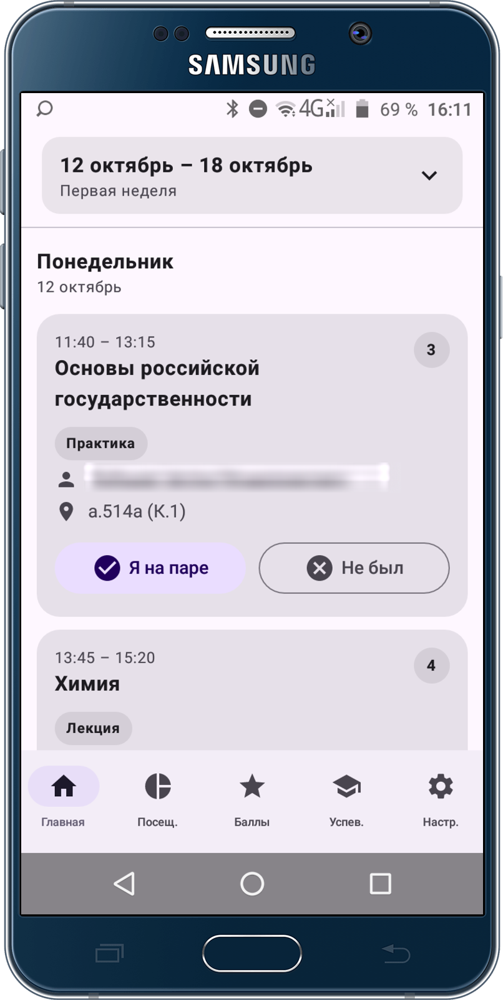
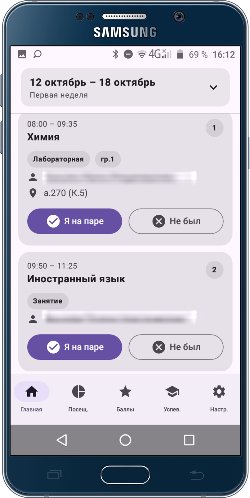
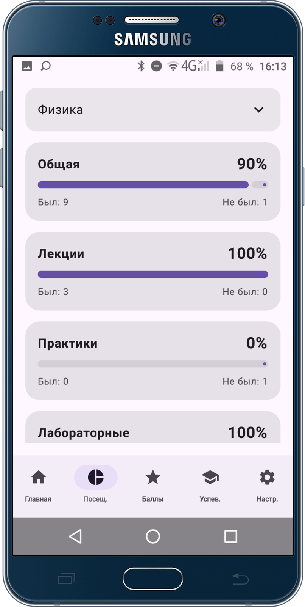
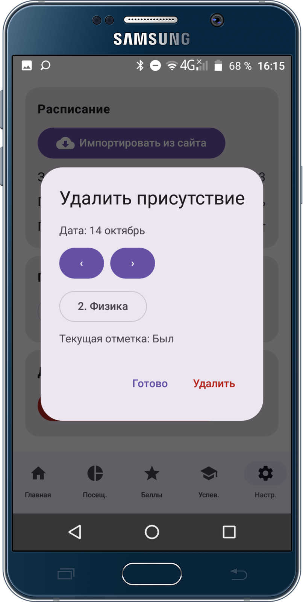
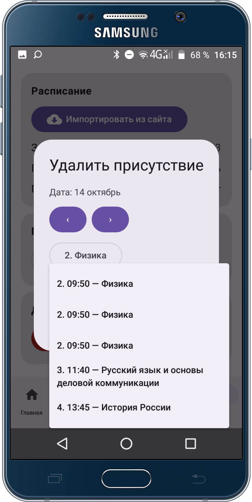
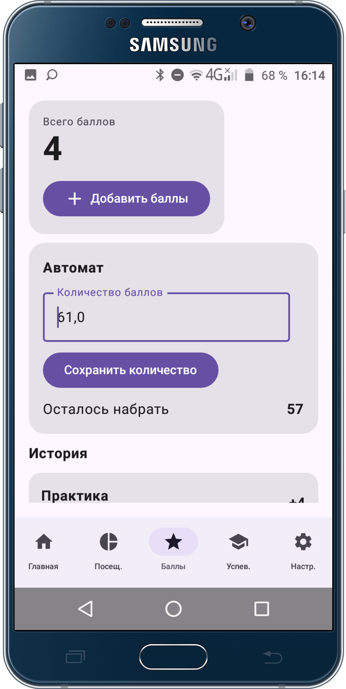
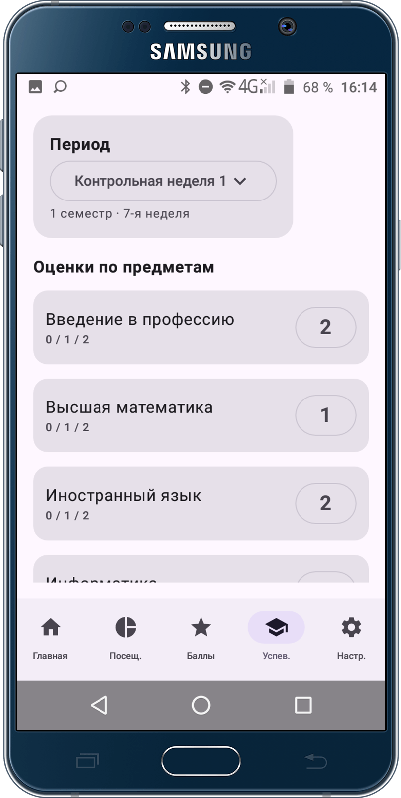
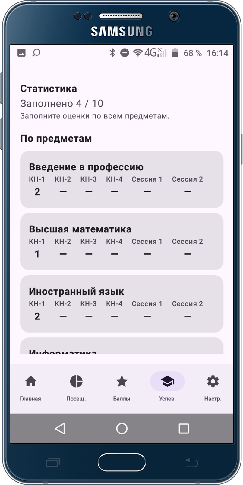
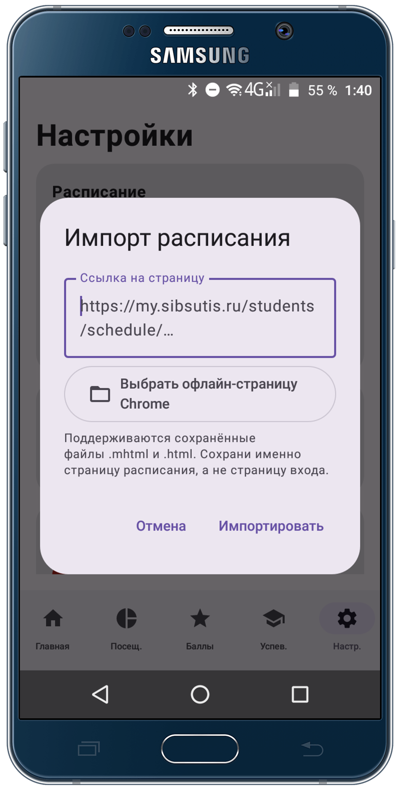
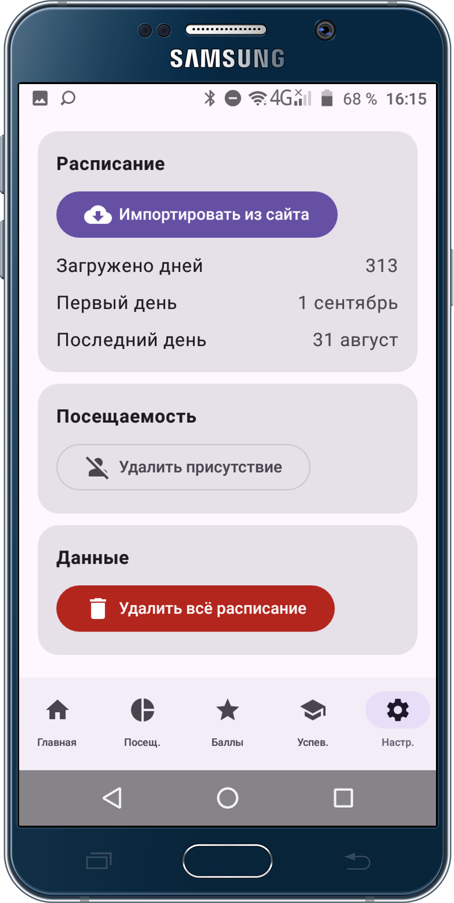

UNIVERSITY STATS · ANDROID
Твой учебный год
Без лишнего шума
Нативное приложение, которое помогает видеть расписание, фиксировать посещаемость и держать учебные результаты под рукой.
01 · РАСПИСАНИЕ
Неделя становится проще
Просматривай занятия по дням, времени и типу пары. Отмечай присутствие или пропуск прямо в карточке и запускай таймер: 45 минут до перерыва, 5 минут перерыва и ещё 45 минут до конца пары.


02 · ПОСЕЩАЕМОСТЬ
Отслеживай процент посещаемости
Редактируй отметку «был / не был» для конкретной пары и даты. Так можно исправить ошибку, а статистика посещаемости останется актуальной.



03 · БАЛЛЫ И УСПЕВАЕМОСТЬ
Баллы и история изменений
Веди баллы по предметам, сохраняй историю изменений и задавай цель для автомата. Результаты остаются на устройстве.

04 · УСПЕВАЕМОСТЬ
Оценки по контрольным и сессиям
Смотри результаты по каждому предмету в разрезе контрольных недель и сессий. Отдельная сводка показывает, насколько заполнены оценки.


05 · ИМПОРТ
Добавь расписание за пару шагов
Вставь ссылку на страницу расписания университета или выбери сохранённые файлы .html/.mhtml. Можно выбрать несколько файлов — приложение объединит их в одно расписание.

06 · НАСТРОЙКИ
Данные под контролем
Импортируй учебный архив, удаляй отдельную отметку посещаемости или очищай расписание целиком — нужные действия собраны в одном месте.

ВЕРСИИ ПРИЛОЖЕНИЯ